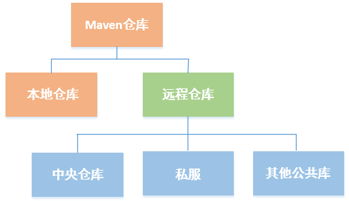

保存构件的地方即为repository（仓库）。
仓库的分类
maven仓库分为两类：本地仓库和远程仓库。
当maven根据pom中定义的坐标寻找构件时，首先在本地仓库中寻找，当找不到时再从远程仓库寻找，都找不到时抛出异常。
maven远程仓库还可进一步分类：

本地仓库
默认maven会在c盘创建一个.m2的本地仓库，如果要修改本地仓库地址，可以修改setting.xml文件：
1 | <settings> |
远程仓库
中央仓库
使用解压软件打开%M2_HOME%/lib/maven-model-builder-3.1.1.jar，然后访问路径org/apache/maven/model/pom-4.0.0.xml，可看到：
1 | <repositories> |
包含这段配置的文件是所有maven项目都会继承的超级pom。上述配置中，snapshots子元素enabled的值为false，表示不从中央仓库下载快照版本的构件。
私服
私服是一种特殊的远程仓库，架设于局域网内。当maven需要下载构件时，先从私服寻找，私服中没有再从外部仓库下载。
私服有许多显著的优点：
■ 节省外网带宽
■ 加速maven构件
■ 部署第三方构件
■ 提高稳定性，增强控制
■ 降低中央仓库的负荷
远程仓库配置
如果默认的远程中央仓库无法满足需求，我们可以在pom中添加远程仓库的配置：
1 | <project> |
在repositories元素下，使用repository元素声明一个或多个远程仓库。上面的xml声明了一个id为jboss，名称为JBoss Repository的仓库。
任何一个仓库的id是唯一的，maven自带的中央仓库使用的id为central，如果其他仓库的id也为central，那么它将覆盖自带的中央仓库。
url指向仓库地址，一般该地址都是基于http协议。releases的enabled值为true，表示开启JBoss仓库的发布版本下载支持，snapshots的enabled值为false，表示关闭JBoss仓库的快照版本的下载支持。
release和snapshots元素还可以配置另外两个子元素：
1 | <snapshots> |
updatePolicy元素配置maven从远程仓库检查更新的频率，默认值为daily。其他可用值有：never —— 从不检查更新，always —— 每次构建都检查更新，interval：X —— 每隔X分钟检查一次更新。用户也可以使用命令 mvn clean install -U强制更新。
checksumPolicy元素用来配置当下载构件时，maven检验和验证失败时候的动作，默认为warn，即输出警告信息，ignore则为忽略错误。
远程仓库认证
如果远程仓库出于安全的考虑设置了用户名和密码，这时候我们必须在settings.xml中配置：
1 | <settings> |
上述xml指定了id为my-proj的远程仓库的用户名和密码。
部署至远程仓库
如前所述，私服一大作用是可以部署第三方构件。无论是开发中生成的构件还是正式发布的构件，都需要部署到私服中供小组中的其他开发人员使用，在maven项目pom中配置：
1 | <project> |
上述xml明确指定了快照版本和发行版本的私服id和地址，如前所述，如果私服设置了账号密码，则应该在settings.xml中设置对应id的私服账号和密码，就本例来说，我们应该在settings.xml中设置：
1 | <settings> |
配置正确后，可以运行命令mvn clean deploy将项目构建输出的构件部署到对应的远程仓库。
快照版本
版本元素version中添加SNAPSHOT标识，表明该构件为快照版本。SNAPSHOT版本的构件发布到私服的过程中，maven会自动加上时间戳。另一位开发者从该私服获取这个构件的时候，maven会自动获取时间戳最新的构件。
快照版本只应该在组织内部依赖使用，项目不应该依赖于任何组织外部的快照版本依赖。因为快照版本的不稳定性会对项目造成潜在的危险。
镜像
如果仓库B可以提供仓库A存储的所有内容，那么就可以认为B是A的一个镜像。maven默认的远程中央仓库由于服务器不在中国，所以访问速度可能会慢些，这时候可以再settings.xml中配置一个镜像：
1 | <settings> |
<mirrorOf>的值为central，表示该配置为中央仓库的镜像。任何对于中央仓库的请求都会本转至该镜像。
镜像常用于私服。由于私服可以代理任何外部的公共仓库，所以可以说私服就是所有仓库的镜像。如：
1 | <settings> |
<mirrorOf>的值为*号，表示http://192.168.10.217:8081/nexus/content/groups/public/是所有外部仓库的镜像。任何对远程仓库的请求都会被转到这个地址。
<mirrorOf>的配置：
■ <mirrorOf>*<mirrorOf>：匹配所有的远程仓库
■ <mirrorOf>external:*<mirrorOf>：匹配所有不在本机上的远程仓库
■ <mirrorOf>repo1,repo2<mirrorOf>：匹配仓库repo1和repo2
■ <mirrorOf>*,!repo1<mirrorOf>：匹配除了repo1之外的所有远程仓库
镜像仓库完全屏蔽了被镜像仓库，当镜像仓库停止服务的时候，maven仍无法访问被镜像仓库，因而将无法下载构建。
仓库搜索服务
下面列出几个目前能用的maven坐标服务：
1.The Centrl Repository：http://search.maven.org/
2.Maven Repository：http://www.mvnrepository.com/
3.Nexus Repository Manager：https://repository.sonatype.org/#welcome
《Maven实战》读书笔记